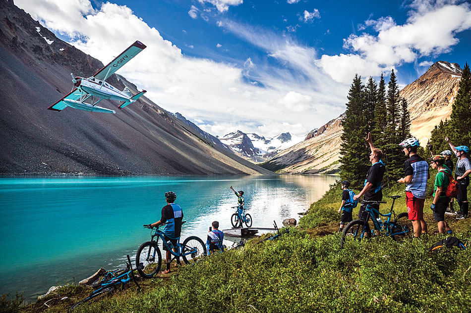

New cycling trips on your travel list
If you have taken trips across beautiful alps in Switzerland, cycling through Canadian alps should be a wonderful experience for you.Biking through rivers across Canada offer breath taking views and beautiful scenery.
You can go alone, hike with friends or take family with you, whatever fills you with
joy and adventure, their is a road trail out there waiting for you.